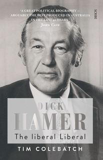

http://youtu.be/0B5xPYUNGeA

Scribe publishing occasionally sends me a catalogue of books it's publishing asking if I'd like to have one to review. Looking through their long list I picked my friend Tim Colebatch's biography of Rupert Hamer on which he's been working for a good while now. It's a very enjoyable book to read. Well organised with the strictly chronological narrative occasionally being interrupted for some analysis and/or a chapter or two on specific issues, it gives a great picture of an unusually accomplished person of decency, liberality and great, if somewhat aloof grace.Hamer was a rat of Tobruk who was always a natural leader with a strong sense of noblesse oblige. He came from Toorak (St George's Rd no less - one of the best for those who don't know), though Colebatch tells us they were not rich or at least their wealth was earned, not inherited. Rupert's mum, Nancy had been orphaned at a young age but spent many years as Vice-President of Victoria Women's Hospital which the Hamer family had spent several decades the previous century helping to build though charity drives. It was the first hospital in the British Empire to be run by and for women.
Hamer's uncle was George Swinburne who was an engineer who'd made a fortune engineering Melbourne's gas and water infrastructure and who then endowed the college named after him - now Swinburne University (though he didn't want it named after him) as an institute for the technical training of the working class. In 1928 Nancy Hamer asked Swinburne's great friend William McPherson - an industrialist turned politician, now Premier - for money to build a new wing of the Victoria Hospital. McPherson said the Government couldn't afford it so he paid for it himself on one condition - that it be kept a secret until after the coming election lest people think he did it to buy votes. How times change.
Anyway, the story gets off to this excellent start. I learned a lot about Victorian history and how much we owe to the Hamers, Swinburnes and McPhersons of the world. Hamer is likewise presented as an urbane, hard-working liberal and exceptionally fair-minded person. He gives Henry Bolte great loyalty and expects it from his party in return. In office he does many of the things that Don Dunstan is famous for doing in South Australia - though with less fanfare and from the opposite side of the aisle. He puts a huge investment into the arts, cleaning up the environment and preserving heritage (He's the guy who saved the Winsor Hotel, and the Shamrock Hotel in Bendigo and Werribee mansion and bought Heide). He outlawed discrimination against women (until the late 60s most women were routinely sacked from professional jobs once they got married).
He legalised homosexual acts and, perhaps dismayed at not saving Ronald Ryan the last man hanged in Victoria and I think Australia, removed Victoria's death penalty. He also increased investment in public transport building Melbourne's loop which was regarded as excessively costly at the time, but which it's hard to believe isn't justified against reasonable social discount rates. (I'd say the same about the Sydney Airport train to the city. I haven't really seen the numbers, so perhaps I'll be forced to change my mind one day, but until then know a service I like when I travel on it!)
Anyway, Hamer was the most successful Premier of his time or since his time - the last to win 3 elections in a row (things are speeding up folks. He wasn't the most successful of the previous generation which included multi-term premiers like Bolte and Playford as the norm). His first two elections were landslides and his third victory saw him limp over the line on account of the fact that his opponent, Frank Wilkes who led Labor was a wet rag who was seen to be a wet rag.
Hamer gradually lost the support of many in his party largely because of his temperamental inability to crack the whip and get nasty at the young turks in his own party and the union movement which was getting up to all sorts of dreadful stuff, holding up building projects, reneguing on deals and all the rest of it. Hamer instinctively thought the best of people and was both forgiving and keen to negotiate further without being too discriminating as to whether the people he ended up negotiating further with were actually bona fide in the negotiation - a bit like Obama.
He was also very consensual in decision making - though he could assert himself when he felt strongly enough. But his energy and control of the party atrophied in the last three or four years of his nine year reign eventually becoming a bit of a circus. Imagine sacking a Minister - Ian Smith - effectively for more or less public insubordination only to have him turn up and sit in the seat next to you in the media conference you hold on the subject. Then not long afterward the Minister apologises and you let him back in the cabinet.
Hamer resigned in extraordinary circumstances in which he was overseas on a trade mission and one of his ministers gave a taped interview to a journo that belittled him. "Hamer has almost lost his identity. He's been so pummelled, pushed around and led about that I don’t' think he knows whether he is coming or going." Thanks pal.
Hamer returned to Australia, took soundings and, though he could probably have ridden out the storm having already decided to go in a few months, went immediately. A sad end to a very decent man who achieved a great deal for his state.
Occasional Tim Colebatch eccentricities grace the page. I doubt many analysts of Australia's stand at Tobruk reference Muhammad Ali's 'rope a dope' as a model military manoeuvre but it works well enough. Tim also thinks the 1973 tariff cut was a recklessly made decision which turned out to be a disaster. I disagree on both counts, but some might think I'm not objective about it - it was my Dad's idea! Still Tim fails to mention that a working group of four people including (I think) Jim Cairns advisor left leaning economist Brian Brogan and Alf Rattigan spent about a month writing a paper where they agreed unanimously on the proposal (though Rattigan agonised as it wasn't done in the way he had in mind for the Tariff Board/IAC). I also wonder if Tim has read my father's article "The 25% tariff cut: was it a mistake?". One of the points made there is that all sorts of other macro-economic phenomena did a lot more damage to manufacturing than the tariff cut. To be fair Tim does mention the high dollar and the wages explosion, but equal pay for women was even more important - especially in textiles clothing and footwear.
Anyway, it's an absorbing biography which was sent me for nix in the hope that I'd tell you that you should go out and buy it.
You should go out and buy it.
I know Tim Colebatch. Tim Colebatch is a friend of mine. And Tim Colebatch is not this small. But he is this small on Scribe's website.